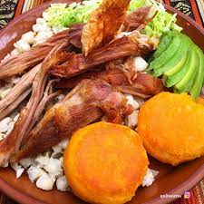

Hornado

Ingredients
- 5 pounds of skinned pork leg
- 1 cup of beer
- 1 cup of orange juice
- 1 tablespoon of oregano
- 1 tablespoon of salt
- 10 garlic seeds
- 1 red onion
- 3 tablespoons of aciote oil
- 1 branch of white onion
- Half tablespoon of pepper
- 1 tablespoon cumin
- Salt
Instructions
- We are going to start by blending the red onion, the white onion,
the garlic, the oregano, the cumin, the pepper, the salt and the beer.
- With a knife we make several holes in the leg of the pig, large enough
for our finger to enter and to be able to dress it well.
-
We put the pork leg in a bag, add the smoothie and the glass of chicha
de jora or orange and close the bag, leaving it to marinate for about 24
hours.
- We place the leg in a pyrex and put it in the oven at 200 o C, after half
an hour we take it out and bathe the leg with the juice that it releases.
- Cover it with aluminum foil so that it bakes evenly, but if you want the
leather to be crispy you can bake it without it, we leave it
for approximately 1 ½ more hours, that is, a total of 2 hours.